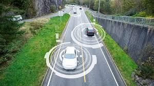

Dirección IP
- ¿Qué es una dirección IP?
- Tipos de dirección IP
- Formas de utilizar las direcciones IP
- Qué es DNS
¿Qué es una dirección IP?
Lo primero que debes saber es qué es IP. Ellos son las iniciales de Internet Protocol, que traducido al español lo podemos llamar
como Protocolo de Internet.En otras palabras, es el sistema estándar mediante el cual funciona la internet,
por medio de un proceso de envío y recepción de información.
Una dirección IP es un conjunto de números, únicos e irrepetibles, que identifica a
un dispositivo con la capacidad de conectarse a internet, ya sea una computadora, tableta, celular, o incluso dispositivos
inteligentes preparados para (Internet de las cosas).
Pensemos en un ejemplo más sencillo para explicar qué es una dirección IP. Imagina que las carreteras de tu ciudad son la Internet,
y que los vehículos que circulan en ellas son los dispositivos desde donde navegan las personas.
|
Ejemplo: Imagina que las carreteras de tu ciudad son la Internet, y que los vehículos que circulan en ellas son los dispositivos desde donde navegan las personas. Sea cual sea el medio de transporte, todos tienen una matrícula y es esa la que los identifica y diferencia. En este sentido, podríamos decir que la matrícula de un vehículo en este ejemplo es la dirección IP de tu dispositivo conectado a Internet. |
 |
Tipos de dirección IP
¿Para qué sirve una dirección IP? Las direcciones IP sirven para identificar los dispositivos conectados a internet, pero también funcionan para ubicar a
equipos y portales web juntos a una red.
Las IPs se dividen en dos tipos: las públicas y las privadas. Que pueden ser utilizadas de dos formas: IPs dinámicas e IPs estáticas.
- IP pública<---
- IP privada<---

|
Estáticas
Es la dirección IP asignada a un dispositivo, la cual no cambia. Es decir que utilizará el mismo número IP de por vida. Se aplica tanto para direcciones públicas o privadas. Las direcciones IP estáticas ofrecen mayor estabilidad y velocidad de descarga. Aunque, pueden ser más vulnerables a ciertos inconvenientes, como al ataque 4 de hackers, por ejemplo; Ya que, al ser direcciones estáticas, los hackers cuentan con más tiempo para operar en ellas. Para obtener una dirección IP es necesario pagar una cuota adicional y la configuración de estas debe ser de forma manual, así que si no tienes mucho conocimiento técnico será necesario contratar a alguien para que te ayude con el servicio. |
|
Dinámicas
Las direcciones IP dinámicas se caracterizan por que van cambiando cada vez que el dispositivo se conecta a Internet. Se usa generalmente cuando los proveedores tienen más clientes que direcciones IP debido a la poca probabilidad que existe de que todos se conecten al mismo tiempo. Además de ofrecer una mayor seguridad y privacidad, su configuración es automática. Sin embargo, un punto débil de este tipo de dirección IP, es la probabilidad de que la conexión se interrumpa, pues eso se sucede con más frecuente que en una IP fija. |

|
¿Qué es DNS?
El DNS (Sistema de Nombres de Dominio) es el encargado de “traducir” los números de una dirección IP en un nombre de dominio. Es decir que convierten el dominio escrito en el navegador y dirigen el acceso hacia el servidor al que apunta el dominio.